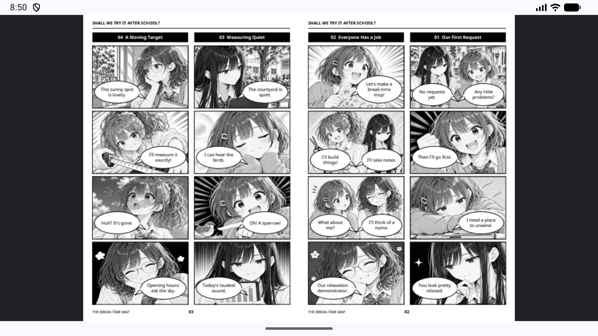
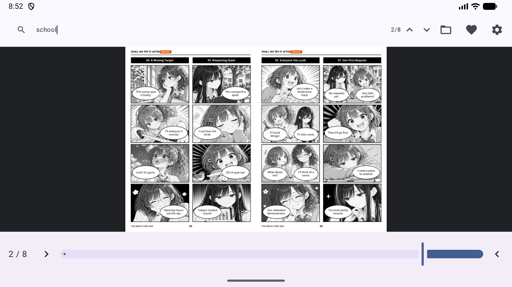
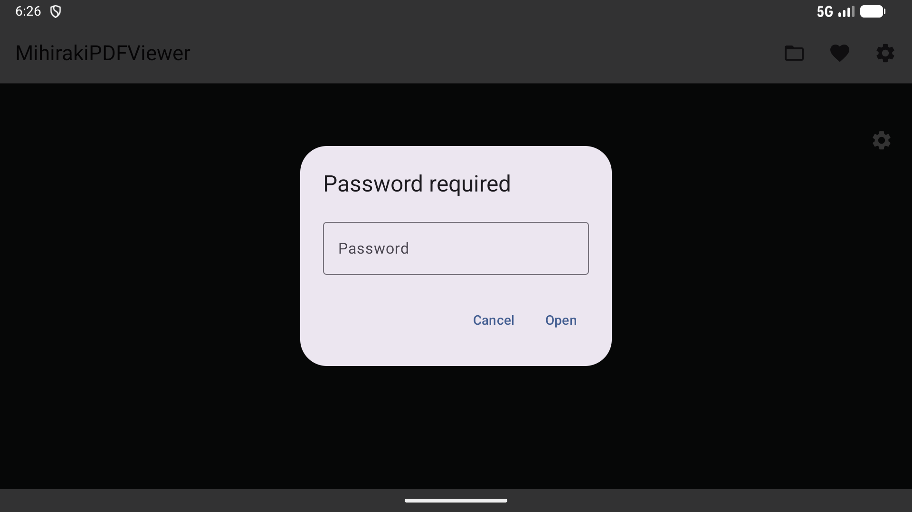
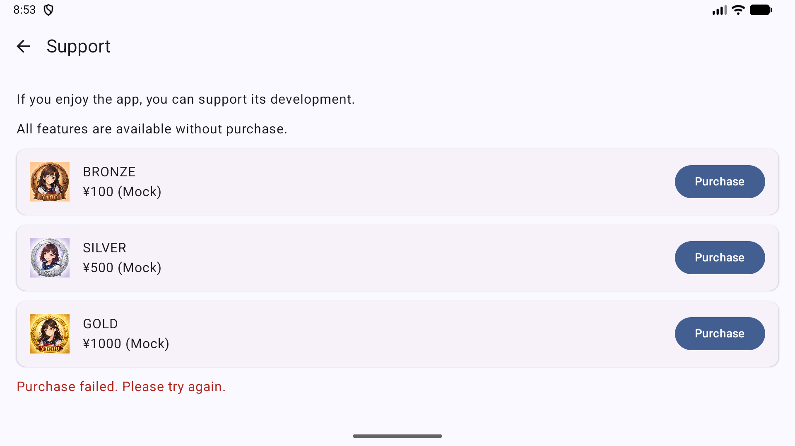
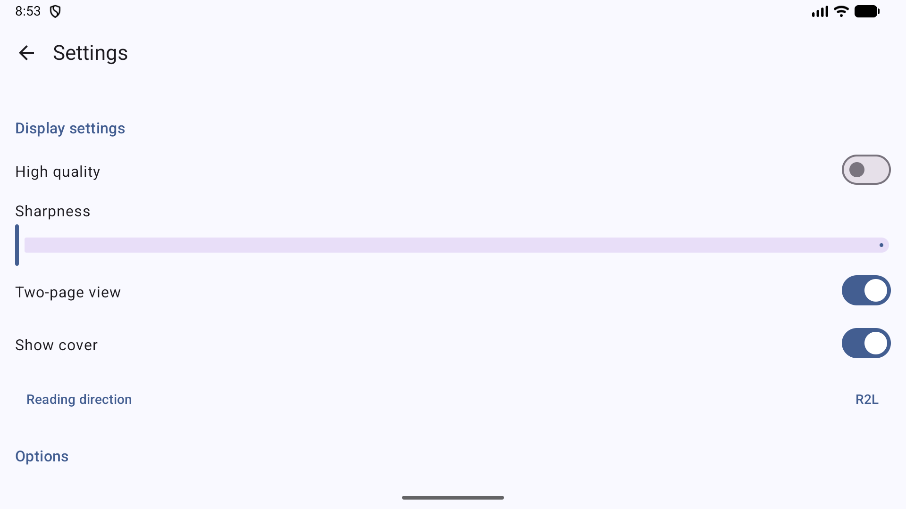

Un visor de PDF moderno optimizado para doble página y lectura R2L en Android
Visualice dos páginas lado a lado. Perfecto para diseños inmersivos de manga y libros de arte.
Soporte completo para el orden de lectura de derecha a izquierda, incluyendo controles deslizantes invertidos y gestos de deslizamiento intuitivos.
Detecta automáticamente el diseño de la página y la dirección de lectura a partir de los metadatos del PDF para una experiencia sin configuración.
Búsqueda rápida de texto con resaltado preciso de coincidencias (fondo amarillo y borde rojo) en los documentos.





Try out MihirakiPDFViewer with these sample PDF files:
MihirakiPDFViewer está diseñado con la privacidad como eje central.
*Nota: La conexión a Internet solo se utiliza al abrir explícitamente archivos desde servicios de almacenamiento en la nube como Google Drive.
Gratis y sin anuncios
La aplicación es completamente gratuita. Todas las funciones principales, como la visualización de PDF, la doble página y la búsqueda, están disponibles sin ninguna restricción, independientemente de si realiza una compra.
*Se ofrecen propinas opcionales dentro de la aplicación para apoyar al desarrollador. Los colaboradores verán una insignia conmemorativa especial en la pantalla de Ajustes.